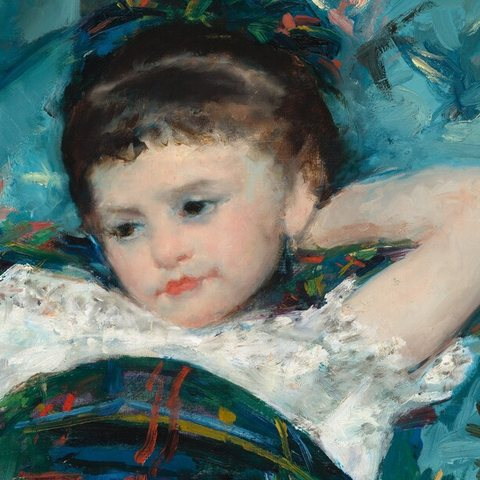
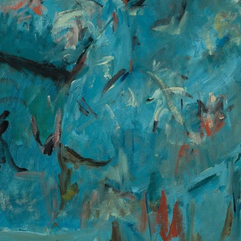
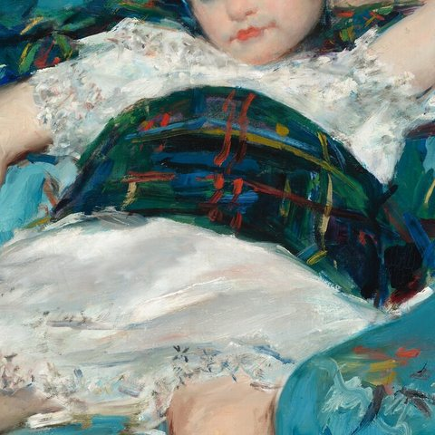

The child in the armchair

Paint the girl first, sprawled in the big armchair: one arm behind her head, the other hanging over the arm of the chair, her legs apart, her eyes turned away. Her white dress is lace and loose strokes; her sash and socks are a tartan of green, black and blue, with orange and yellow lines.
Cover the armchairs with turquoise and a scatter of quick strokes in green, pink, red and white for the chintz pattern. Put Baptiste, your dog, asleep on the armchair at the left. Behind the furniture, the floor meets a single wall straight across the picture.

